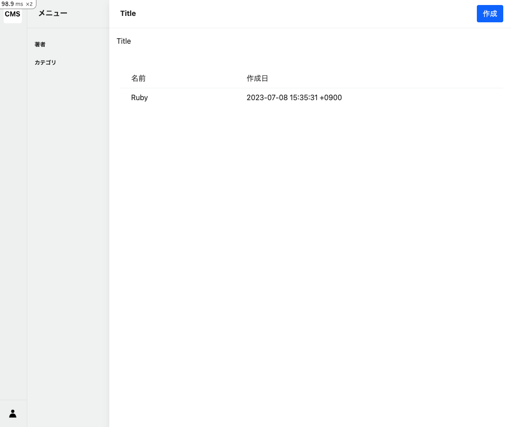

Tag一覧画面
一覧画面の改善
記事管理機能①：タグ管理で作成した一覧画面を、より使いやすく改善します。
[command]
以下のコマンドで、一覧画面を改善します。
app/views/admin/tags/breadcrumbフォルダと_index.html.erbファイルを作成します。app/views/admin/tags/_index_table.html.erbファイルを作成します。
mkdir -p app/views/admin/tags/breadcrumb && touch app/views/admin/tags/breadcrumb/_index.html.erb && touch app/views/admin/tags/_index_table.html.erb
indexアクションの更新
[code]
先ほど作成したindexアクションを以下のように更新します。Tagモデルを使用して、全てのTagデータを取得します。
モデルの全てのデータを取得したい時は、モデル名.allと記述します。
Filename: app/controllers/admin/tags_controller.rb
# frozen_string_literal: true
class Admin::TagsController < Admin::ApplicationController
def index
@tags = Tag.all
end
end
パンくずリストの作成
[code]
パンくずリストは、画面の上部に表示されるリストです。パンくずリストを作成することで、どの画面にいるのかをユーザーに伝えることができます。
admin_tags_pathは、/admin/tagsのパスを返します。ルーティングの設定を行ったので、ヘルパーメソッドを使用することでパスを取得できます。
Filename: app/views/admin/tags/breadcrumb/_index.html.erb
<li>
<%= link_to admin_tags_path do %>
<%= t ".title" %>
<% end %>
</li>
もしヘルパーメソッドを使わない書き方をしたい場合は、以下のように記述します。
例1
<li>
<%= link_to "/admin/tags" do %>
<%= t ".title" %>
<% end %>
</li>
例2
<li>
<a href="/admin/tags"><%= t ".title" %></a>
</li>
一覧表示のテーブルの作成
[code]
Filename: app/views/admin/tags/_index_table.html.erb
<div class="sw-main-body-table table-responsive">
<table>
<thead>
<tr>
<th></th>
<th>名前</th>
<th>作成日</th>
</tr>
</thead>
<tbody>
<% @tags.each do |tag| %>
<tr>
<td class="rowlink">
<%= link_to admin_tag_path(id: tag&.id) do %>
<% end %>
</td>
<td style="min-width: 100px;">
<%= tag&.name %>
</td>
<td style="min-width: 150px;">
<%= tag&.created_at %>
</td>
</tr>
<% end %>
</tbody>
</table>
</div>
eachメソッド
eachメソッドは、配列やハッシュの要素を順番に取り出すことができます。
&.演算子
&.演算子は、nilの場合にエラーを発生させないようにするための演算子です。
Tagデータの作成
一覧画面に、Tagデータを表示したいですが、まだデータが存在しないため、表示することができません。
Railsコンソールを使用して、Tagデータを作成します。
[command]
bin/rails c
[code]
Railsコンソール内で、以下のコードを実行します。
Tag.create(name: "Ruby")
[output]
Tagモデルを使用して、Tagデータを作成します。
/workspace# bin/rails c
Loading development environment (Rails 7.0.3)
[1] pry(main)> Tag.create(name: "Ruby")
TRANSACTION (0.1ms) BEGIN
Tag Create (0.9ms) INSERT INTO "tags" ("name", "created_at", "updated_at") VALUES ($1, $2, $3) RETURNING "id" [["name", "Ruby"], ["created_at", "2023-07-08 15:35:31.415910"], ["updated_at", "2023-07-08 15:35:31.415910"]]
TRANSACTION (0.9ms) COMMIT
=> #<Tag:0x0000ffff852366a0
id: "a764bb18-6a57-49e6-8d4e-58a2d75b0210",
name: "Ruby",
created_at: Sat, 08 Jul 2023 15:35:31.415910000 JST +09:00,
updated_at: Sat, 08 Jul 2023 15:35:31.415910000 JST +09:00>
上記の結果から、id: "a764bb18-6a57-49e6-8d4e-58a2d75b0210", name: "Ruby"のTagデータが作成されたことがわかります。
一覧画面用のテーブルを表示する
[code]
Filename: app/views/admin/tags/index.html.erb
<div class="l-container">
<%= render partial: "layouts/admin/article_menu" %>
<div class="l-main-view">
<div class="sw-main-header">
<div class="sw-main-header-title">
<%= t ".title" %>
</div>
<div class="sw-main-header-buttons">
<div class="sw-main-header-button">
<%= link_to new_admin_tag_path, class: "btn btn-primary" do %>
<%= t "buttons.create" %>
<% end %>
</div>
</div>
</div>
<div class="sw-main-body">
<ul class="breadcrumb p-3">
<%= render partial: "admin/tags/breadcrumb/index" %>
</ul>
<%= render partial: "admin/tags/index_table" %>
</div>
</div>
</div>
一覧画面の確認
[output]
ブラウザで以下のURLにアクセスすると、以下のような画面が表示されます。

※ 注意点
- RubyのTagデータが表示されていることを確認してください
- Rubyをクリックしても、詳細画面に遷移しないことを確認してください。
- なぜなら、詳細画面の作成を行っていないため、詳細画面に遷移することができないからです。
次に、詳細画面の作成を行います。